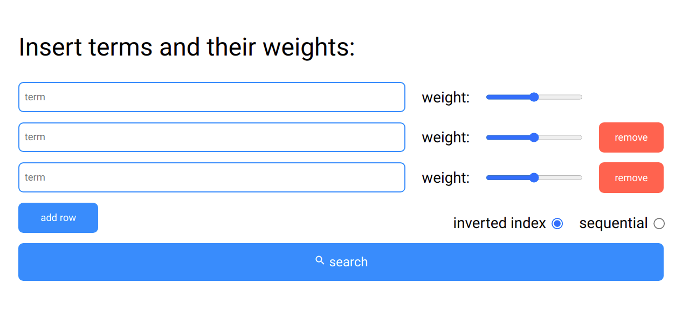

Projekty
Soustředím se na práci s daty. Vybral jsem několik veřejných projektů, na kterých jsem pracoval. Většina projektů, na kterých pracuji bohužel podléhá NDA a nemohu je zde prezentovat. Projekty, které zde sdílím jsou buď mé vlastní a najdete je na mém GitHubu nebo se jedná o opensourcové projekty, které mají vlastní GitHub repozitáře.
- Vektorový vyhledávací model
-

Jedná se o implementaci vyhledávače v HTML stránkách. Aplikace dokáže vyhledávat podle zadaných slov a jejich vah. Díky vektorovému modelu jsme schopni vyhledávat velmi rychle.
detail projektu vektorový model - Springboot
-
Podílel jsem se na opensourcovém projektu Springboot. V současné době se jedná o nejpoužívanější Java framework. Konkrétně jsem pracoval na vývoji rest repozitářů a servletů. Rozepisuji se o tom, jak moje spolupráce probíhala a na čem jsem pracoval.
detail projektu springboot
- Dolování dat z webu
-
Projekt se zabývá prací s daty. Tento projekt se skládá z několika programů. Nabízí funkcionality na dolování dat, na převod dat do různých formátů nebo jejich validaci. Používám různé xml technologie, ale také javascript.
detail projektu vytěžování dat